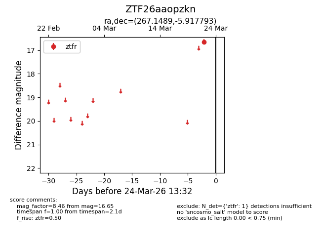
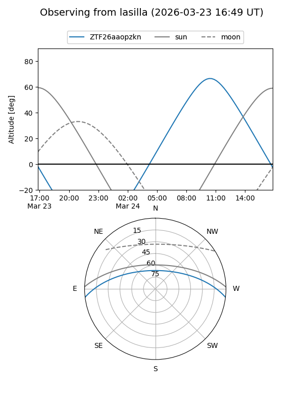
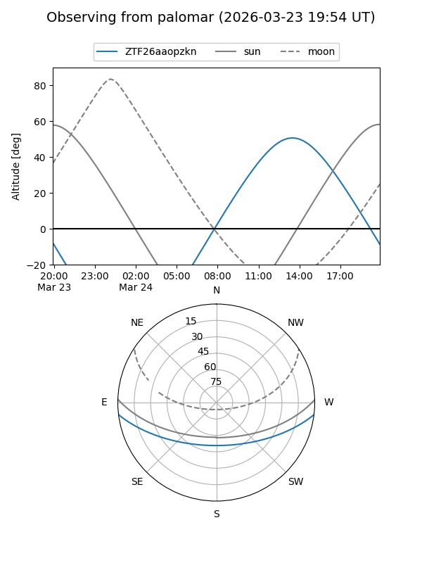

ZTF26aaopzkn
Target ZTF26aaopzkn at 2026-03-24 13:35
Aliases and brokers:
FINK: link
Lasair: link
ALeRCE: link
alt names
ZTF26aaopzkn (ztf,fink_ztf)
Coordinates:
equatorial (ra, dec) = 267.1489,-5.91779
equatorial (HMS+DMS) = 17:48:35.74,-05:55:04.06
galactic (l, b) = (20.3010,+11.10993)
Flags:
Photometry:
last ztfr=16.65
1 ztfr detections
Lightcurve

Visibility


Additional plots